Multiclass Total Variation Clustering (2013)
DescriptionIdeas from the image processing literature have recently motivated a new set of clustering algorithms that rely on the concept of total variation. While these algorithms perform well for bi-partitioning tasks, their recursive extensions yield unimpressive results for multiclass clustering tasks. This paper presents a general framework for multiclass total variation clustering that does not rely on recursion. The results greatly outperform previous total variation algorithms and compare well with state-of-the-art NMF approaches.
Related publication
X. Bresson, T. Laurent, D. Uminsky and J.H. von Brecht, "Multiclass Total Variation Clustering", arXiv:1302.2717, 2013 PDF
Keywords
unsupervised data clustering, multi-class, Cheeger cut, spectral method, total variation, NMF
Code
Matlab/C Lastest version First version
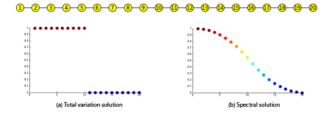
An Adaptive Total Variation Algorithm for Computing the Balanced Cut of a Graph (2013)
DescriptionWe propose a novel algorithm that improves our NIPS12 algorithm "Convergence and Energy Landscape for Cheeger Cut Clustering" for solving the L1-relaxation of the Cheeger cut problem. Our previous algorithm used a sequence of inner total variation minimizations to guarantee descent of the TV-Balanced cut energy as well as convergence of the algorithm. In practice, the total variation minimization step is never solved exactly. Instead, an accuracy parameter is specified and the total variation minimization terminates once this level of accuracy is reached. The choice of this parameter can vastly impact both the computational time of the overall algorithm as well as the accuracy of the result. We introduce an adaptive stopping condition for the total variation minimization that still guarantees monotonicity of the algorithm. This results is an algorithm that is actually monotonic in practice and proves to be twice faster on the MNIST benchmark database.
Related publication
X. Bresson, T. Laurent, D. Uminsky and J.H. von Brecht, "An Adaptive Total Variation Algorithm for Computing the Balanced Cut of a Graph", arXiv:1302.2717, 2013 PDF
Keywords
unsupervised data clustering, Cheeger cut, spectral method, continuous L1 relaxation, total variation, convergence analysis
Code
Matlab/C ZIP
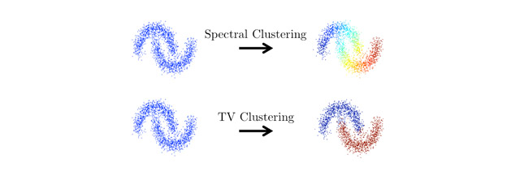
Enhanced Compressed Sensing Recovery With Level Set Normals (2013)
DescriptionWe propose a compressive sensing algorithm that exploits geometric properties of images to recover images of high quality from few measurements. The image reconstruction is done by iterating the two following steps: 1) estimation of normal vectors of the image level curves, and 2) reconstruction of an image fitting the normal vectors, the compressed sensing measurements, and the sparsity constraint. The proposed technique can naturally extend to nonlocal operators and graphs to exploit the repetitive nature of textured images to recover fine detail structures. In both cases, the problem is reduced to a series of convex minimization problems that can be efficiently solved with a combination of variable splitting and augmented Lagrangian methods, leading to fast and easy-to-code algorithms. Extended experiments show a clear improvement over related state-of-the-art algorithms in the quality of the reconstructed images and the robustness of the proposed method to noise, different kind of images, and reduced measurements.
Related publication
V. Estellers, J.P. Thiran and X. Bresson, "Enhanced Compressed Sensing Recovery with Level Set Normals", IEEE Transactions on Image Processing, 22(7), 2611-2626, 2013 PDF
Keywords
Compressed sensing, image reconstruction, level sets, convex optimization
Code
Matlab/C ZIP
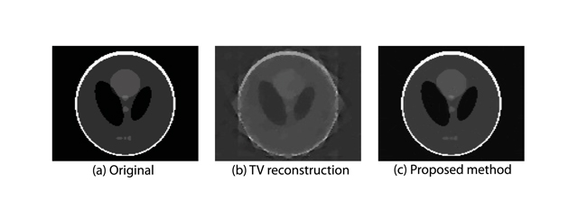
Convergence and Energy Landscape for Cheeger Cut Clustering (2012)
DescriptionWe introduce a new algorithm to solve the L1-relaxation of the Cheeger cut problem. The L2-relaxation, known as spectral clustering, only loosely relates to the Cheeger cut; however, it is convex and leads to a simple optimization problem. The L1-relaxation, in contrast, is non-convex but is provably equivalent to the original problem. The L1-relaxation therefore trades convexity for exactness, yielding improved clustering results at the cost of a more challenging optimization. The proposed L1 Cheeger algorithm is based on a steepest descent method that is guaranteed to converge. Experiments show that the proposed L1 Cheeger provides state-of-the-art results for unsupervised data clustering.
Related publication
X. Bresson, T. Laurent, D. Uminsky and J.H. von Brecht, "Convergence and Energy Landscape for Cheeger Cut Clustering", Annual Conference on Neural Information Processing Systems (NIPS), 2012 PDF
Keywords
unsupervised data clustering, Cheeger cut, spectral method, continuous L1 relaxation, total variation, convergence analysis
Code
Matlab/C ZIP
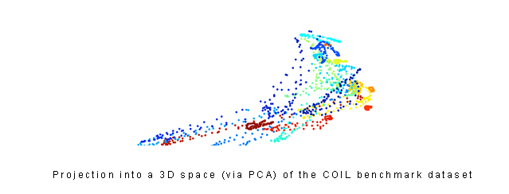
An Efficient Algorithm for Level Set Method Preserving Distance Function (2012)
DescriptionWe introduce a fast algorithm to preserve distance functions in level set methods. Our algorithm is inspired by recent efficient L1 optimization techniques, which will provide an efficient and easy to implement algorithm. It is interesting to note that our algorithm is not limited by the CFL condition and it naturally preserves the level set function as a distance function during the evolution, which avoids the classical re-distancing problem in level set methods. We apply the proposed algorithm to carry out image segmentation, where our methods proves to be 5 to 6 times faster than standard distance preserving level set techniques.
Related publication
V. Estellers, D. Zosso, R. Lai, J.P. Thiran, S. Osher, X. Bresson, "An Efficient Algorithm for Level Set Method Preserving Distance Function", IEEE Transactions on Image Processing, 2012 PDF
Keywords
level set method, signed distance function, splitting method, convex optimization, total variation, image segmentation, surface reconstruction
Code
Matlab/C ZIP
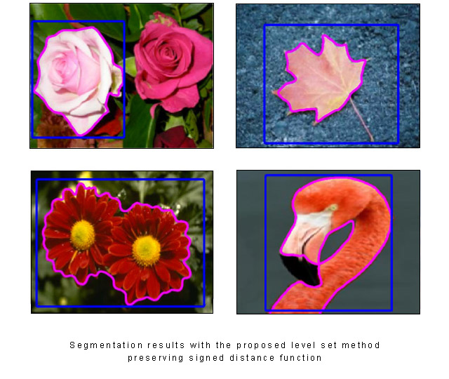
Multi-Class Transductive Learning based on L1 Relaxations of Cheeger Cut and Mumford-Shah-Potts Model (2012)
DescriptionWe introduce two multi-class transductive learning algorithms based on the L1 relaxation of the Cheeger cut and the Mumford-Shah-Potts models. Experiments show that the proposed L1 relaxation algorithms are more accurate than standard L2 relaxation methods s.a. spectral clustering, particularly when considering a very small number of labels for each class to be classified. For instance, the mean error of classification for the benchmark MNIST dataset of 60,000 data using the proposed L1 relaxation of the multi-class Cheeger cut is 2.4% when only one label is considered for each class, while the error of classification for the L2 relaxation method of spectral clustering is 24.7%.
Related publication
X. Bresson, X.-C. Tai, T. F. Chan and A. Szlam, "Multi-Class Transductive Learning based on L1 Relaxations of Cheeger Cut and Mumford-Shah-Potts Model", CAM report 12-03, 2012 PDF
Keywords
data clustering, transductive learning, Cheeger, Mumford-Shah, Potts, spectral clustering, total variation, L1 relaxation, convex optimization
Code
Matlab/C ZIP 1 ZIP 2 ZIP 3
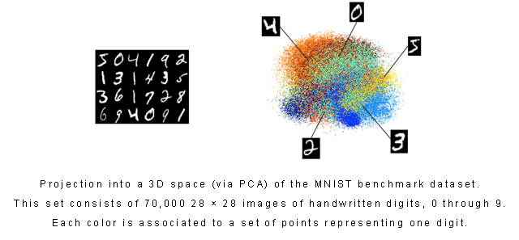
Surface reconstruction using Power Watershed (2011)
DescriptionWe define a surface reconstruction algorithm from a set of scattered points in 3D. We derive a Power Watershed algorithm to tackle this problem, which is fast, robust to markers placement, and produces smooth surfaces. Experiments show that the proposed algorithm compares favorably in terms of speed, memory requirement and accuracy with existing variational and discrete algorithms.
Related publication
C. Couprie, X. Bresson, L. Najman, H. Talbot, L. Grady, "Surface reconstruction using Power Watershed", International Symposium on Mathematical Morphology, 2011 PDF
Keywords
surface reconstruction, point measurements, graph-based optimization, graph cut method, total variation
Code
Matlab/C ZIP
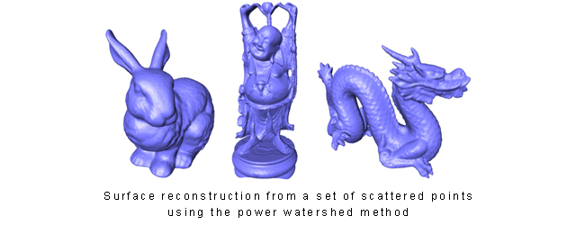
Bregmanized Nonlocal Regularization for Deconvolution and Sparse Reconstruction (2010)
DescriptionBregman methods introduced in image processing are demonstrated to be an efficient optimization method for solving sparse reconstruction with convex functionals, such as the L1 norm and total variation. In particular, the efficiency of this method relies on the performance of inner solvers for the resulting subproblems. We propose a general algorithm framework for inverse problem regularization with a single forward-backward operator splitting step, which is used to solve the subproblems of the Bregman iteration. We prove that the proposed algorithm, namely, Bregmanized operator splitting (BOS), converges without fully solving the subproblems. Furthermore, we apply the BOS algorithm and a preconditioned one for solving inverse problems with nonlocal functionals. Our numerical results on deconvolution and compressive sensing illustrate the performance of nonlocal total variation regularization under the proposed algorithm framework, compared to other regularization techniques such as the standard total variation method and the wavelet-based regularization method.
Related publication
X. Zhang, M. Burger, X. Bresson, and S. Osher, "Bregmanized Nonlocal Regularization for Deconvolution and Sparse Reconstruction", SIAM Journal on Imaging Sciences, 3(3), 253-276, 2010 PDF
Keywords
compressed sensing, sparse optimization, Bregman iteration, primal-dual method, forward-backward method, nonlocal regularization
Code
Matlab/C ZIP
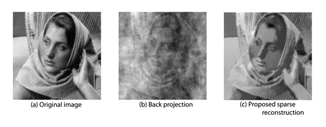
An Algorithm for Nonlocal TV Minimization (2009)
DescriptionThis is an algorithm to efficiently minimize the nonlocal Total Variation (NLTV) energy. The method is based on the Split-Bregman (SB), introduced by Goldstein-Osher, and extended to a nonlocal/graph version by Zhang-Burger-Bresson-Osher. For the 256x256 Barbara picture, the computation of weights takes around 1 second for a patch size 5x5 and a search window 11x11 and the NLTV minimization takes less than 2 seconds. So the total time for an image 256x256 for the NLTV minimization is less than 3 seconds. We also compare the SB version of NLTV with the dual version of NLTV, the NLH1, and the NL-Means. Experiments show that the SB-NLTV provides the best denoising result.
Note
X. Bresson, "A Short Note for Nonlocal TV Minimization", June 2009 PDF
Related publication
X. Zhang, M. Burger, X. Bresson, and S. Osher, "Bregmanized Nonlocal Regularization for Deconvolution and Sparse Reconstruction", SIAM Journal on Imaging Sciences, 3(3), 253-276, 2010 PDF
Keywords
image denoising, Nonlocal Total Variation (NLTV), Split-Bregman method, Comparisons with nonlocal H1, nonlocal Means
Code
Matlab/C ZIP
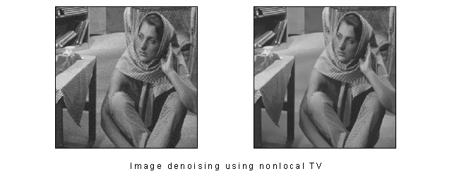
Local Histogram Based Segmentation Using the Wasserstein Distance (2009)
DescriptionWe propose a nonparametric region-based active contour model for segmenting cluttered scenes. The proposed model is unsupervised and assumes pixel intensity is independently identically distributed. Our proposed energy functional consists of a geometric regularization term that penalizes the length of the partition boundaries and a region-based image term that uses histograms of pixel intensity to distinguish different regions. More specifically, we use Wasserstein distance with exponent 1 to determine the dissimilarity between two histograms. The Wasserstein distance is a metric and is able to faithfully measure the distance between two histograms, compared to many pointwise distances. Moreover, it is insensitive to oscillations, and therefore our model is robust to noise. Eventually, our model does not required histogram differentiation.
Related publication
K. Ni, X. Bresson, T. Chan and S. Esedoglu, "Local Histogram Based Segmentation Using theWasserstein Distance", International Journal of Computer Vision, 84(1), 97-111, 2009 PDF
Keywords
Image segmentation, unsupervised, Wasserstein distance, convex optimization, total variation
Code
Matlab/C ZIP
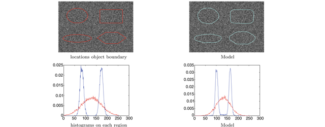
A Fast Global Minimization Algorithm for Active Contour Models based on the Split-Bregman Method (2009)
DescriptionA fast global minimization algorithm is developed to minimize a large class of segmentation models called active contours. We believe that the proposed theory and algorithm produce so far one of the most efficient minimization methods for the active contour segmentation problem. For example, the well-know cameraman picture, which size is 256x256, is segmented in less than 0.1 seconds. Besides, our algorithm, while being easier to code, produces results slightly faster than the popular and fast graph-cuts technique. Our algorithm is also more accurate than graph-cuts because it uses isotropic schemes to regularize the contour and is sub-pixel accurate. Besides, the memory requirement is low. Finally, the reader can make fast its own active contour model. In the code, we emphasized the parts where the reader can add his/her own model.
Note
X. Bresson, "A Short Guide on a Fast Global Minimization Algorithm for Active Contour Models", 2009 PDF
Related publication
T. Goldstein, X. Bresson, and S. Osher, "Geometric Applications of the Split Bregman Method: Segmentation and Surface Reconstruction", Journal of Scientific Computing, 45(1-3), 272-293, 2010 PDF
Keywords
segmentation, active contour, snake, global minimization, independence of initial position, ROF/TV model, Mumford-Shah energy, Chan-Vese model, fast minimization, Split-Bregman method, comparison with Graph-Cuts
Code
Matlab/C ZIP
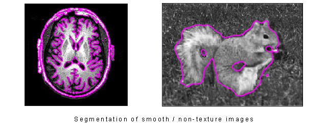
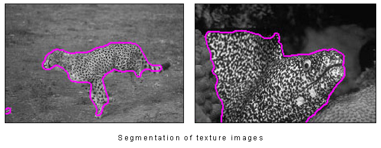
Active Contour with Shape Prior (2008)
DescriptionWe propose an implementation of the segmentation method proposed in the journal paper "A Variational Model for Object Segmentation Using Boundary Information and Shape Prior Driven by the Mumford-Shah Functional". The proposed segmentation algorithm combines the snake/geodesic active contour model with the Mumford-Shah model and constrains the shape in a family of forms provided by a principal component analysis (pca).
Related publication
X. Bresson, P. Vandergheynst and J. Thiran, "A Variational Model for Object Segmentation Using Boundary Information and Shape Prior Driven by the Mumford-Shah Functional", International Journal of Computer Vision (IJCV), Vol. 28, No 2, pp. 145 - 162, 2006 PDF
Keywords
segmentation, active contour, shape prior, principal component analysis/pca, level set method, Mumford-Shah model
Code
Matlab/C ZIP
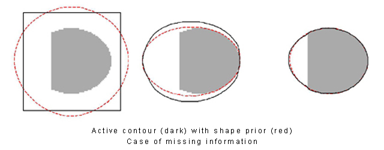
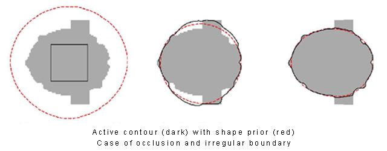
Fast Color Image Processing: Color Denoising and Color Deblurring (2007)
DescriptionWe propose a regularization algorithm for color images which is fast, easy to code and mathematically well-posed. More precisely, the regularization model is based on the dual formulation of the vectorial total variation (VTV) norm and it may be regarded as the vectorial extension of the dual approach defined by Chambolle in 2004 for gray-scale images. The proposed model offers several advantages. First, it minimizes the exact VTV norm whereas standard approaches use a regularized norm. Then, the numerical scheme of minimization is straightforward to implement and finally, the number of iterations to reach the solution is low, which gives a fast regularization algorithm. Finally, and maybe more importantly, the proposed VTV minimization scheme can be easily extended to many standard imaging applications.
Related publication
X. Bresson, T.F. Chan, "Fast Dual Minimization of the Vectorial Total Variation Norm and Applications to Color Image Processing", Inverse Problems and Imaging, 2(4), 455-484, 2008 PDF
Keywords
vector-valued total variation, dual optimization, image denoising, Rudin-Osher-Fatemi model
Code
Matlab/C for Color Denoising ZIP
Matlab/C for Color Deblurring ZIP
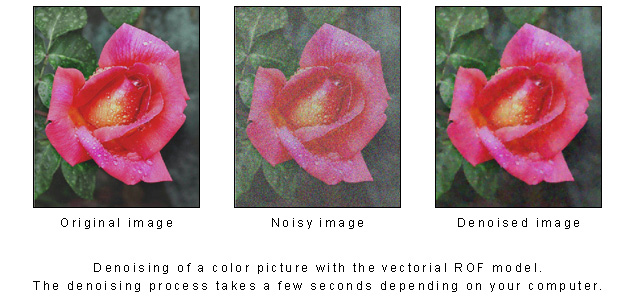
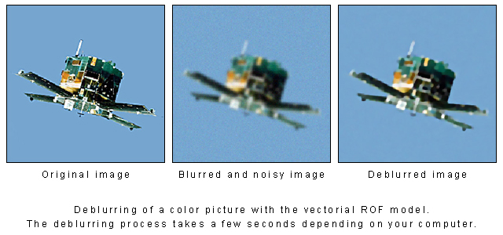
A Global Minimization of the Active Contour Model based on Chambolle's Projection Algorithm (2007)
DescriptionThe active contour/snake model is one of the most successful variational models in image segmentation. The only drawback of this model is the existence of local minima in the active contour energy, which makes the initial guess critical to get satisfactory results. We introduce an algorithm that determines a global minimizer of the active contour model. Our approach is based on the unification of image segmentation and image denoising tasks into a global minimization framework. From a numerical point of view, we propose a new practical way to solve the active contour propagation problem through a dual formulation of the minimization problem. The dual formulation, easy to implement, allows us a fast global minimization of the snake energy. It avoids the usual drawback in the level set approach that consists of initializing the active contour in a distance function and re-initializing it periodically during the evolution, which is time-consuming.
Related publication
X. Bresson, S. Esedoglu, P. Vandergheynst, J. Thiran and S. Osher, "Fast Global Minimization of the Active Contour/Snake Model", Journal of Mathematical Imaging and Vision, 2007 PDF
Keywords
active contour, global optimization, weighted total variation norm, Rudin-Osger-Fatemi model, Mumford-Shah energy, dual formulation of total variation
Code
Matlab/C ZIP
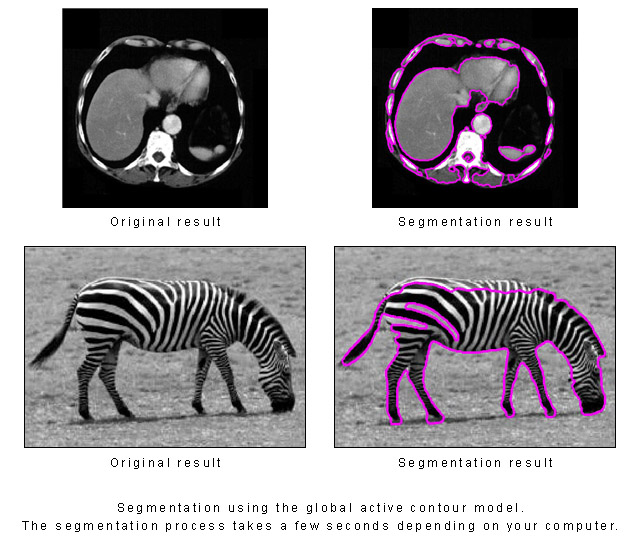